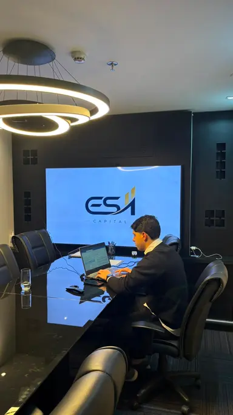

ES11 Capital · Consultoria patrimonial
Planejamento patrimonial
para quem decide
com estratégia.
Avalie caminhos para adquirir ativos, preservar liquidez e construir patrimônio de forma planejada, com análise de cenários e sem pressão de venda.
- Diagnóstico inicial gratuito, sem compromisso.
- Estratégia personalizada para o seu momento e contexto.
- Se o consórcio não for o melhor caminho, você vai ouvir isso de mim.

Quem é o João
Disciplina do esporte,
método de mercado.
A trajetória de João Vittor começou antes do mercado financeiro. O esporte lhe ensinou disciplina, resiliência e que resultados consistentes se constroem com planejamento e não com sorte.
Ao longo da carreira, passou por empresas como iFood, Loggi e XP Investimentos até fundar a ES11 Capital, escritório dedicado a soluções financeiras para empresários e investidores.
Seu foco é ajudar clientes a construir patrimônio de forma inteligente, combinando — quando fizer sentido — consórcio, investimentos, seguros e crédito estruturado. Patrimônio não se constrói pagando juros altos, e sim tomando decisões planejadas.
“Nem toda pessoa que conversa comigo precisa contratar um consórcio. Primeiro precisamos entender se essa é realmente a melhor estratégia para o momento dela.”
Para quem é o atendimento
Isso faz sentido para você?
O atendimento é consultivo e serve a quem trata patrimônio como decisão de longo prazo. Você provavelmente se identifica se está em um destes perfis.
-
Destaque
Investidores
Quer diversificar ativos e usar o consórcio como instrumento estratégico de aquisição, sem comprometer a liquidez da carteira.
-
Empresários
Precisa adquirir imóveis, frota ou equipamentos preservando o caixa da operação e planejando o crescimento.
-
Profissionais liberais
Busca transformar boa renda em patrimônio consistente, com um plano claro em vez de decisões no impulso.
-
Diversificação patrimonial
Deseja organizar objetivos, prazos e prioridades para construir patrimônio de forma estruturada.
Especialidades
Como o João pode ajudar
Uma visão geral do trabalho. Os detalhes ganham forma no diagnóstico, quando a estratégia é desenhada para o seu caso.
-
01
Planejamento patrimonial
Estruturação de objetivos, patrimônio, liquidez, prazo e alternativas: a base de qualquer decisão bem tomada.
-
02
Consórcio aplicado a investimentos
Análise do consórcio como instrumento possível de aquisição e construção patrimonial, avaliado com estratégia, nunca vendido pela emoção.
-
03
Soluções financeiras integradas
Avaliação conjunta de consórcio, investimentos, seguros e crédito estruturado para encontrar o caminho mais adequado ao seu perfil.
Decisões em que o diagnóstico costuma ajudar
- Adquirir imóveis e formar patrimônio imobiliário
- Comprar imóvel comercial
- Adquirir veículos, frota ou equipamentos
- Preservar liquidez em uma aquisição
- Planejar uma aquisição futura
- Diversificar ativos
- Avaliar consórcio, financiamento ou crédito
- Transformar renda em patrimônio
Como funciona o atendimento
Do objetivo à estratégia,
sem atalhos.
-
01
Objetivo
Você apresenta o que deseja adquirir, construir ou organizar.
-
02
Diagnóstico
Entendemos momento financeiro, liquidez, capacidade, prazo e prioridades.
-
03
Cenários
Avaliamos alternativas possíveis e os impactos de cada caminho.
-
04
Estratégia
Apresento os caminhos que podem fazer sentido para o seu perfil.
-
05
Acompanhamento
Havendo contratação, acompanho a execução da estratégia ao longo do tempo.
A estrutura por trás do atendimento
Atendimento consultivo com a
estrutura da ES11 Capital
A ES11 Capital atua com planejamento e estruturação patrimonial para investidores, empresários, profissionais liberais, famílias e empresas. Antes de recomendar qualquer solução, são considerados objetivo, liquidez, prazo, capacidade financeira, oportunidades e riscos.
Dúvidas frequentes
Perguntas que costumam vir antes da conversa.
Não encontrou sua dúvida? Fale diretamente comigo — respondo pessoalmente.
Tirar dúvida no WhatsAppA primeira conversa tem custo?
Não. O primeiro contato é um diagnóstico gratuito para entender seu objetivo, seu momento financeiro e avaliar quais caminhos podem fazer sentido para você.
O atendimento pode ser feito on-line?
Sim. O atendimento pode ser conduzido on-line ou presencialmente em São Paulo, conforme a sua preferência.
Você atende clientes fora de São Paulo?
Sim. Embora a base seja em São Paulo, o acompanhamento consultivo pode ser feito a distância para clientes de outras cidades.
Preciso saber qual produto quero contratar?
Não. O trabalho começa pelo objetivo, não pelo produto. A partir da sua situação, avaliamos juntos quais estratégias podem fazer sentido.
Você atende investidores e empresas?
Sim. O atendimento contempla investidores, empresários, profissionais liberais e empresas que planejam aquisições, diversificação ou crescimento patrimonial.
Existe garantia de contemplação?
Não. A ES11 não trabalha com promessa de contemplação em data específica. O atendimento busca construir uma estratégia compatível com o objetivo, o prazo e a capacidade financeira de cada cliente.
O próximo passo
Vamos entender juntos qual
é a melhor estratégia para você.
Uma conversa de diagnóstico, gratuita e sem compromisso. Se o consórcio não for o melhor caminho para o seu momento, essa também será a minha recomendação.